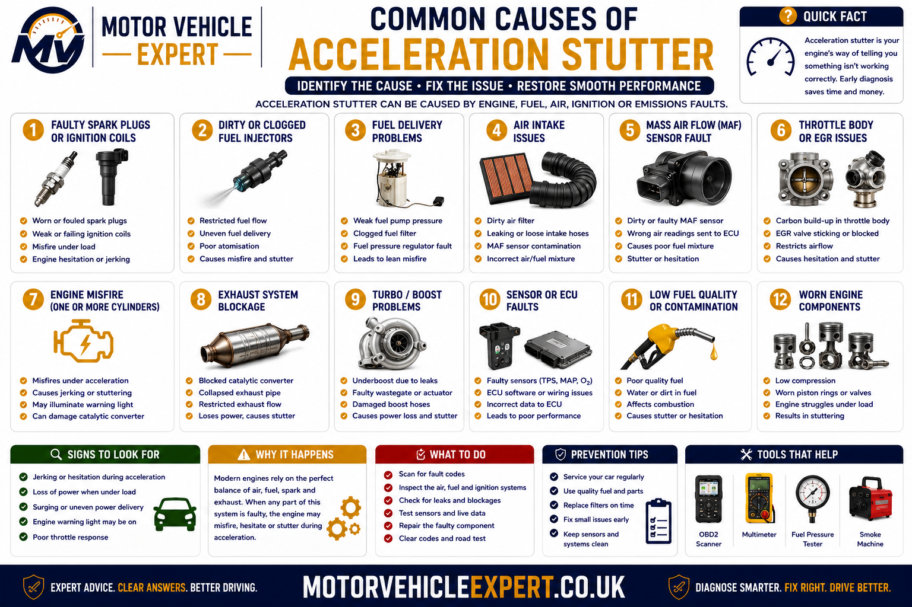
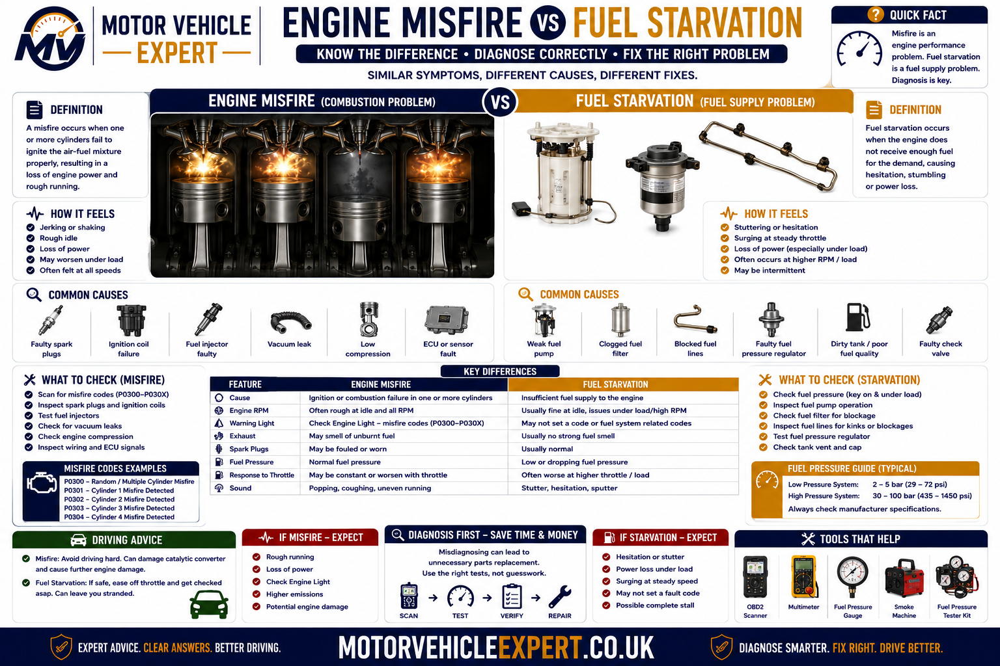
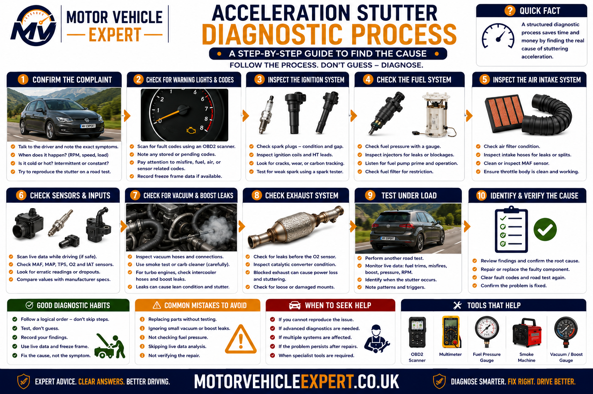
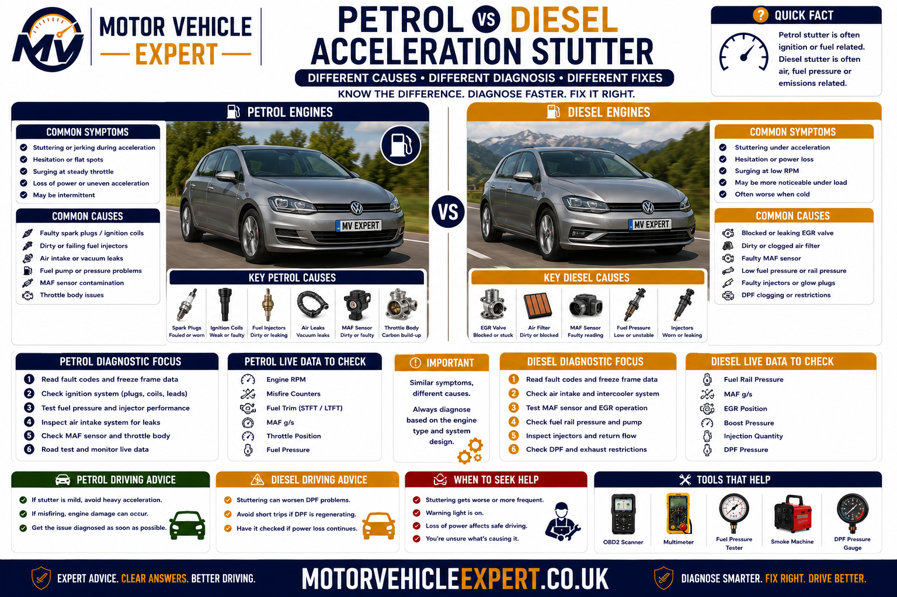
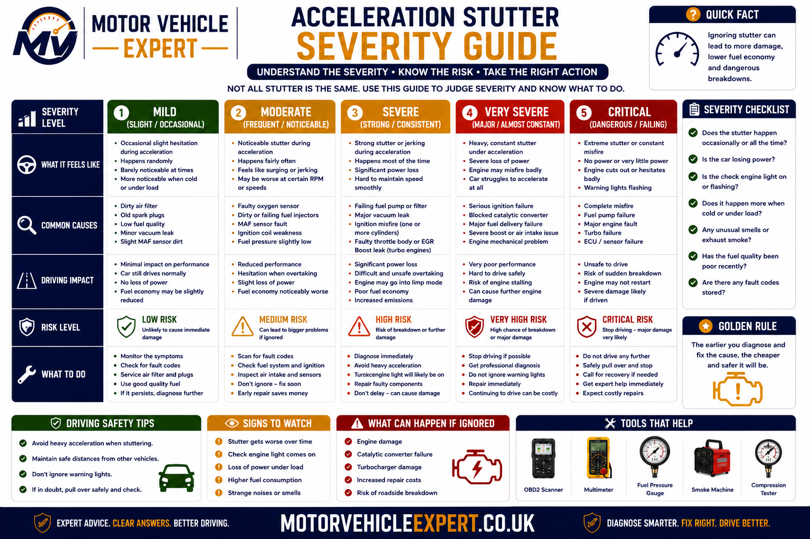
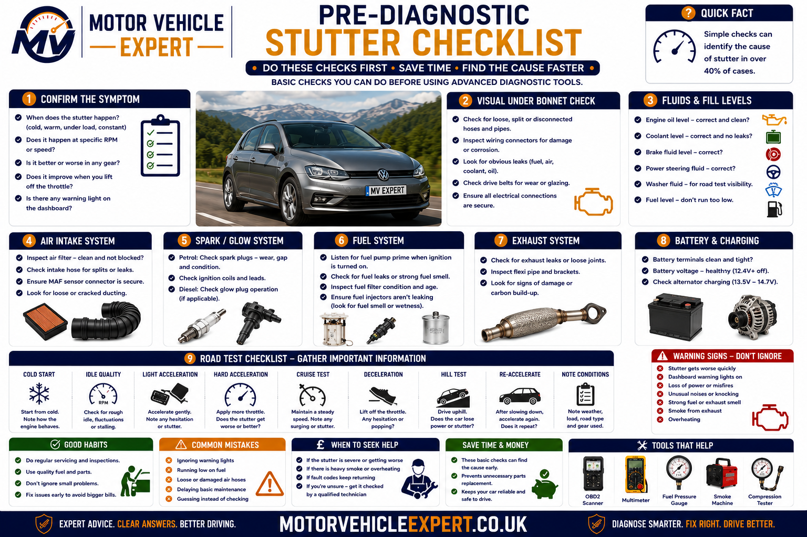

Use the Diagnostic App for Acceleration Stuttering
Acceleration stuttering can feel similar to hesitation, jerking, misfiring, surging, clutch slip and transmission shudder. The Motor Vehicle Expert diagnostic app can help you compare the symptom pattern before replacing parts.
1. Match the Symptom
Record whether the vehicle stutters, hesitates, shakes, surges, judders or loses drive.
2. Record the Conditions
Note engine temperature, gear, throttle position, road gradient, warning lights and smoke.
3. Compare Likely Systems
Separate ignition, fuel, airflow, boost, emissions and transmission faults.
4. Judge the Urgency
Identify whether cautious driving, prompt diagnosis or immediate recovery is appropriate.
Photograph warning messages and read fault codes before disconnecting the battery or clearing the control modules. Freeze-frame information may show the engine speed, load and temperature present when the fault occurred.
Why Does a Car Stutter When Accelerating?
A car usually stutters during acceleration because combustion or power delivery becomes unstable when the engine is placed under load. Common causes include worn spark plugs, weak ignition coils, low fuel pressure, blocked filters, injector faults, inaccurate airflow sensors, throttle problems, boost leaks, EGR or DPF faults, limp mode and transmission problems.
The way the engine and rev counter behave provides an important first clue. Heavy shaking and an uneven exhaust note suggest an engine misfire. Smooth power loss or repeated surging may indicate fuel, boost or airflow control. Engine revs rising without a matching increase in road speed points more strongly towards clutch or transmission slip.
Engine Shakes and Runs Unevenly
More likely to involve spark plugs, ignition coils, injectors, compression or another cylinder-specific misfire.
Power Cuts In and Out Smoothly
More likely to involve unstable fuel pressure, boost control, airflow readings, throttle control or limp mode.
Revs Rise but Speed Does Not
More likely to involve manual clutch slip, automatic gearbox slip, torque-converter shudder, CVT faults or a dual-clutch problem.
Stuttering that appears only during acceleration is usually load-related. The engine may idle perfectly because ignition, fuel, airflow and boost demand are low. The weakness becomes visible only when cylinder pressure, fuel demand and requested torque increase.
A flashing engine-management light can indicate a severe catalyst-damaging misfire. Heavy smoke, overheating, strong fuel smell, repeated limp mode or unsafe loss of power also requires prompt action.
What Does Acceleration Stuttering Feel Like?
Acceleration stuttering is an uneven interruption in engine torque or power delivery when the driver presses the accelerator. The vehicle may briefly cut power, shake, jerk, splutter or surge before continuing to accelerate.
Some drivers describe the fault as hesitation, juddering, bucking, misfiring or fuel starvation. These descriptions can overlap, but the precise behaviour helps determine whether the fault begins in the engine, fuel system, turbocharger, transmission or drivetrain.
Rapid Repeated Jerking
The vehicle delivers power in short pulses rather than accelerating smoothly. Ignition misfires, injector faults and unstable fuel pressure are common possibilities.
Brief Flat Spot
The engine pauses after the accelerator is pressed and then recovers. Throttle control, airflow measurement, boost response or fuelling may be delayed.
Shaking Under Load
The engine or vehicle body shakes during stronger acceleration. Cylinder misfire, mountings, clutch judder or transmission shudder should be considered.
Power Cuts In and Out
Acceleration alternates between normal and weak. Fuel pressure, boost control, electrical supply or ECU torque intervention may be unstable.
Stutter Followed by Limp Mode
The vehicle may hesitate or surge before a warning appears and power becomes limited. The control system has probably detected a serious operating fault.
Stutter Only in One Gear
A repeatable fault in one automatic ratio may point towards transmission control or internal clutch operation rather than an engine-wide problem.
Combustion Becomes Uneven
- ✓ The engine shakes or runs roughly.
- ✓ The exhaust note becomes uneven.
- ✓ The engine-management light may flash.
- ✓ Fuel smell may appear at the exhaust.
- ✓ Misfire counters increase under load.
- ✓ Performance improves when throttle demand is reduced.
Torque Changes Without Heavy Shaking
- ✓ Power fades and returns smoothly.
- ✓ The engine may surge repeatedly.
- ✓ Fuel pressure or boost changes with the symptom.
- ✓ Black smoke may appear on a diesel.
- ✓ Restarting may temporarily restore performance.
- ✓ The fault is often worse under heavier load.
Record whether the vehicle shakes, pauses, surges, loses boost, changes gear or allows the revs to rise without road-speed increase. These differences determine which system should be tested first.
Stuttering vs Hesitation, Juddering and Surging
Drivers often use these terms interchangeably, but each describes a slightly different behaviour. Separating them helps prevent an engine misfire being confused with clutch judder, transmission slip or a brief throttle delay.
Stuttering
Repeated interruptions in torque, often felt as a series of short jerks while acceleration continues.
Hesitation
A pause or delayed response after the accelerator is pressed, followed by acceleration.
Juddering
A lower-frequency vibration or shaking commonly associated with clutch engagement, engine mounts or drivetrain movement.
Surging
Power repeatedly increases and decreases even though the accelerator position remains steady.
| Driver description | Typical behaviour | Systems to consider first |
|---|---|---|
| Stuttering | Rapid repeated loss and return of power | Ignition, injectors, fuel pressure and boost control |
| Hesitation | Delay before the engine responds | Throttle, airflow, fuelling and turbo response |
| Juddering | Shaking during pull-away or load change | Clutch, mountings, misfire and drivetrain |
| Surging | Power rises and falls at steady throttle | Boost, fuel pressure, EGR and sensor control |
| Revs flare | Engine speed rises without matching acceleration | Clutch, automatic gearbox, CVT or torque converter |
| Power capped | Engine will not exceed a limited output | Limp mode or transmission protection |
A diesel boost leak may cause hesitation followed by surging and black smoke. A worn clutch may judder during pull-away and slip under stronger acceleration. Diagnosis should follow the full symptom pattern rather than one word.
Common Causes of Acceleration Stuttering
The most likely cause depends on whether the vehicle is petrol or diesel, naturally aspirated or turbocharged, manual or automatic, and whether the symptom appears cold, hot, at low speed or only under heavy load.

Several faults can create a similar driver complaint, so the cause should be confirmed through symptom reproduction, fault-code evidence, live data and system-specific tests.
Worn Spark Plugs
Excessive electrode wear, fouling or incorrect gap can cause a petrol engine to misfire as cylinder pressure rises.
Weak Ignition Coil
A coil may work at idle but break down electrically during stronger acceleration.
Low Fuel Pressure
Weak pumps, blocked filters, pressure regulators or electrical supply faults can reduce fuel delivery under demand.
Injector Fault
Restricted, leaking or electrically faulty injectors can make one or more cylinders contribute unevenly.
MAF or MAP Sensor Fault
Incorrect airflow or manifold-pressure information can disturb fuelling, boost control and calculated torque.
Throttle-Control Fault
Carbon buildup, actuator faults, pedal-sensor errors or adaptation problems can interrupt throttle response.
Boost Leak
Split hoses, loose joints or intercooler damage can make turbocharged engines hesitate, smoke or surge under load.
Turbo-Control Fault
Actuator, wastegate, variable-vane, vacuum or solenoid faults can produce unstable or insufficient boost.
Vacuum or Intake Leak
Unmetered air can cause lean running, poor idle quality and hesitation as throttle demand changes.
EGR Fault
An EGR valve stuck open or responding incorrectly can disrupt airflow and combustion during acceleration.
DPF Restriction
Excessive soot or ash loading can increase exhaust back pressure and trigger reduced-power operation.
Transmission Fault
Torque-converter shudder, dual-clutch judder, CVT instability and automatic gear faults can imitate engine stuttering.
A weak ignition coil, low fuel pressure, boost leak and transmission shudder can all feel similar from the driver’s seat. Testing must prove which system loses normal operation when the stutter occurs.
Spark Plugs and Ignition-Coil Faults
Petrol engines require sufficient ignition voltage to create a spark across each plug gap. Cylinder pressure increases during acceleration, so worn plugs or weak coils can fail under load while the engine continues to idle smoothly.
Excessive Spark-Plug Gap
Electrode wear increases the voltage required to produce a spark and can expose a marginal ignition coil.
Fouled Spark Plug
Oil, fuel, carbon or coolant contamination can prevent reliable ignition and reveal a wider engine fault.
Weak Coil Output
Internal insulation or winding faults may allow the coil to operate at low load but fail during acceleration.
Damaged Coil Boot
Cracks, moisture or oil can allow spark energy to escape to the cylinder head.
Wiring or Connector Fault
Engine movement and heat can interrupt coil supply, ground or control signals.
Incorrect Plug Specification
Wrong heat range, reach, gap or resistance can cause poor combustion and component damage.
More Likely When
- ✓ The engine shakes under acceleration.
- ✓ The engine-management light flashes.
- ✓ The fault is worse in a high gear or uphill.
- ✓ One cylinder records repeated misfires.
- ✓ The exhaust note becomes uneven.
- ✓ The engine improves when throttle is reduced.
Useful Ignition Checks
- ✓ Cylinder-specific fault codes.
- ✓ Live misfire counters.
- ✓ Spark-plug condition and gap.
- ✓ Coil output or controlled substitution.
- ✓ Power supply, ground and trigger signals.
- ✓ Compression and injector testing if needed.
Unburned fuel from a severe misfire can overheat the catalytic converter. Reduce load, stop driving where the warning remains flashing and arrange diagnosis.
Fuel Delivery and Injector Faults
Fuel demand rises sharply during acceleration. A pump, filter, regulator or injector can provide enough fuel for idle and gentle driving but fail to maintain the required pressure or flow as load increases.
Restricted Fuel Filter
Limited flow can cause pressure loss, hesitation and stuttering during stronger acceleration.
Weak Tank Pump
A low-pressure pump may fail to supply the high-pressure system with sufficient fuel.
High-Pressure Pump Fault
Direct-injection petrol and common-rail diesel engines depend on stable high fuel pressure under load.
Pressure-Regulator Fault
Incorrect control can make pressure surge, fall or respond too slowly during acceleration.
Restricted Injector
Poor flow can make one cylinder run lean and misfire when more fuel is requested.
Leaking Injector
Excess fuel can create rich running, smoke, difficult starting and catalyst or DPF damage.
Injector Electrical Fault
Wiring, connectors or internal solenoid faults can interrupt fuel delivery to one cylinder.
Fuel Contamination
Water, incorrect fuel or debris can damage pumps and injectors and create intermittent performance faults.
Electrical Supply Problem
Relays, grounds, connectors or voltage drop can reduce pump output under demand.
| Fuel-system pattern | Possible cause | Useful evidence |
|---|---|---|
| Pressure falls as throttle opens | Filter, pump or regulator restriction | Requested and actual pressure separate under load |
| One cylinder repeatedly misfires | Injector, ignition or compression fault | Balance, electrical and cylinder tests |
| Power surges with pressure fluctuation | Unstable pump or pressure control | Pressure trace changes with the stutter |
| Fault worsens with low tank level | Pickup, tank pump or contamination problem | Supply pressure changes with fuel level |
| Difficult starting and rich smoke | Leaking injector or pressure-control fault | Leak-down, exhaust and fuel-trim evidence |
Compression loss, air leaks and fuel-pressure faults can alter injector balance readings. Leak-off, flow, electrical and cylinder tests may be required before injectors are replaced.
MAF, MAP and Airflow-Sensor Faults
The engine-control unit uses airflow and manifold-pressure data to calculate fuelling, ignition, turbo control and expected torque. An inaccurate sensor can produce a believable reading without setting an obvious fault code.
Contaminated MAF Sensor
Oil, dust or filter contamination can make measured airflow lower or less responsive than actual airflow.
Faulty MAP Sensor
Incorrect manifold-pressure feedback can disturb boost, fuelling and torque control.
Blocked Sensor Port
Carbon or oil can prevent a pressure sensor reading the manifold accurately.
Restricted Air Filter
A heavily blocked filter can reduce total airflow under stronger engine demand.
Sensor-Wiring Fault
Connector corrosion, damaged wiring or poor grounds can create intermittent signal loss.
Implausible Sensor Correlation
MAF, MAP, throttle and boost values may disagree and cause the ECU to limit torque.
Sensor values should be checked at idle and under load against expected airflow, manifold pressure and throttle position. Intake leaks and wiring faults can imitate sensor failure.
Throttle-Body and Accelerator-Pedal Faults
Modern vehicles use electronic throttle control to translate accelerator-pedal movement into engine torque. The control unit compares pedal position, throttle angle, airflow, engine speed and safety-system requests before opening the throttle.
Carbon buildup, motor faults, inaccurate position sensors, pedal-sensor problems or wiring defects can interrupt this response and make the vehicle hesitate or stutter as acceleration is requested.
Carbon-Contaminated Throttle
Deposits around the throttle plate can restrict smooth airflow and affect low-angle throttle control.
Throttle-Motor Fault
Internal motor wear or gear damage can prevent the throttle reaching the commanded position.
Throttle-Position Sensor
Implausible or intermittent feedback may cause torque limitation or reduced-power operation.
Accelerator-Pedal Sensor
Dual pedal-position signals must agree. A mismatch can cause delayed response or limp mode.
Wiring or Connector Fault
Corrosion, loose terminals or damaged wiring can interrupt pedal and throttle signals.
Lost Adaptation
Some throttle bodies require a relearn or adaptation after cleaning, replacement or battery disconnection.
| Throttle symptom | Possible cause | Useful check |
|---|---|---|
| Delay after pressing the pedal | Pedal signal, throttle response or torque limitation | Compare pedal request with commanded throttle angle |
| Power cuts at one pedal position | Sensor track or wiring fault | Graph both pedal and throttle-position signals |
| Rough response after cleaning | Adaptation not completed | Perform the correct relearn procedure |
| Throttle warning and limited revs | Electronic throttle-control fault | Read codes and inspect power, ground and signals |
| Throttle command is reduced by ECU | Protection strategy caused by another fault | Identify why torque is being limited |
The ECU can reduce throttle opening after detecting misfire, boost, fuel-pressure, traction-control or transmission faults. Confirm why throttle is being limited before replacing the throttle body.
Turbocharger and Boost-Leak Stuttering
Turbocharged engines depend on stable boost pressure during acceleration. Split hoses, intercooler leaks, control faults and variable-vane or wastegate problems can make boost rise, fall or arrive later than expected.
The driver may feel hesitation followed by a sudden surge, repeated power cycling or a brief stutter before the vehicle enters reduced-power mode.
Split Boost Hose
A hose may open under pressure and reduce delivered boost only during acceleration.
Loose Joint or Seal
A damaged clip or O-ring can allow pressurised air to escape intermittently.
Leaking Intercooler
Cracked end tanks or damaged cores can produce hissing, oil mist and low boost.
Wastegate Fault
Incorrect wastegate control can cause underboost, overboost or unstable acceleration.
Variable-Vane Fault
Carbon buildup or actuator problems can make turbo response inconsistent, especially on diesels.
Boost-Control Solenoid
Electrical or pneumatic control faults can interrupt actuator operation.
Vacuum-Supply Fault
Split vacuum pipes, a weak pump or leaking reservoir can reduce turbo control.
Turbocharger Wear
Bearing, compressor or turbine damage can reduce boost and cause noise, smoke or oil consumption.
Incorrect Boost Sensor Data
A contaminated or faulty MAP sensor can make the ECU control a healthy turbo incorrectly.
More Likely When
- ✓ Hissing or whooshing appears under load.
- ✓ The car hesitates and then surges.
- ✓ Black smoke appears on a diesel.
- ✓ Oil mist is visible around hose joints.
- ✓ Underboost or overboost codes are stored.
- ✓ Power returns after restarting.
How Boost Is Checked
- ✓ Requested versus actual boost pressure.
- ✓ Smoke or pressure testing of intake pipes.
- ✓ Actuator command and physical movement.
- ✓ Vacuum supply and solenoid operation.
- ✓ Intercooler and hose condition.
- ✓ Turbo shaft and compressor condition where accessible.
A serious diesel turbo failure can allow engine oil to enter the intake. Heavy smoke, rapidly rising revs without accelerator input or sudden oil loss requires immediate shutdown and recovery.
Vacuum and Intake Leaks
Air entering the engine without being measured can disturb the fuel mixture, idle control and throttle response. On turbocharged engines, leaks can occur on either the low-pressure intake side or the pressurised boost side.
Split Breather Hose
Crankcase-ventilation pipes can split and introduce unmetered air.
Intake-Manifold Gasket
Leakage can affect one or more cylinders and create lean misfires.
Brake-Servo Vacuum Leak
A leaking servo or hose can affect mixture and braking assistance.
PCV Valve Fault
Incorrect crankcase ventilation can create lean running, whistling and unstable idle.
Purge-Valve Fault
A purge valve stuck open can introduce excessive fuel vapour or unmetered airflow.
Collapsed Intake Pipe
A weak hose may deform under suction and restrict airflow during acceleration.
Large positive petrol fuel corrections at idle that improve as engine speed rises can support a vacuum leak. Smoke testing and physical inspection should confirm the source.
EGR and DPF Faults During Acceleration
Diesel EGR and DPF systems affect airflow and exhaust pressure. An EGR valve stuck open can reduce oxygen available for combustion, while an overloaded DPF can restrict exhaust flow and trigger reduced-power operation.
Possible EGR Symptoms
- ✓ Hesitation at low or mid-range engine speed.
- ✓ Black smoke during acceleration.
- ✓ Rough idle or unstable combustion.
- ✓ Airflow readings do not respond correctly.
- ✓ EGR position differs from the command.
- ✓ Reduced-power mode may appear.
Possible DPF Symptoms
- ✓ Weak acceleration as engine load rises.
- ✓ DPF or engine warning lights.
- ✓ Frequent or failed regenerations.
- ✓ Cooling fans continue running.
- ✓ High differential-pressure readings.
- ✓ Limp mode limits available torque.
EGR Stuck Open
Too much exhaust gas can reduce oxygen and cause poor torque during acceleration.
Blocked EGR Passage
Carbon buildup can prevent expected flow and create airflow correlation faults.
DPF Soot Loading
Repeated short journeys or engine faults may prevent successful regeneration.
DPF Ash Loading
Non-combustible ash remains after regeneration and may require specialist cleaning or replacement.
Pressure-Sensor Fault
Blocked hoses or incorrect sensor readings can imitate filter restriction.
Underlying Engine Fault
Boost leaks, injector faults and oil burning can repeatedly overload the DPF.
Regeneration cannot repair excessive ash, a cracked filter, faulty pressure sensors, injector problems or turbo oil contamination. The reason for repeated DPF loading must be diagnosed.
Limp Mode and Electronic Torque Intervention
Limp mode is a protective response rather than a specific failed component. The engine or transmission control unit limits torque after detecting a fault that could damage the engine, turbocharger, emissions system or gearbox.
Boost Deviation
Underboost or overboost can cause the ECU to reduce throttle, fuelling or turbo control.
Fuel-Pressure Fault
Pressure outside the permitted range may trigger immediate torque limitation.
Severe Misfire
The ECU may reduce output or disable fuel to protect the catalyst and engine.
Throttle Correlation Fault
Disagreement between pedal and throttle signals can restrict acceleration.
DPF or EGR Fault
Emissions-system faults can cause reduced engine torque.
Transmission Protection
Excessive temperature, ratio or pressure faults can limit available gears and torque.
| Behaviour | Limp mode more likely | Mechanical fault more likely |
|---|---|---|
| Performance after restarting | Temporarily returns to normal | Mechanical symptom usually remains |
| Maximum engine output | Electronically restricted | Limited by physical wear or failure |
| Warning messages | Commonly present | May be absent |
| Fault codes | Usually stored | May not exist for manual clutch wear |
| Torque command | Reduced by the control module | Requested torque may remain normal |
Restarting may temporarily restore power, but freeze-frame data and stored codes can reveal the load, temperature and system values present when protection mode began.
Can Clutch or Transmission Faults Feel Like Stuttering?
Yes. Not every acceleration interruption begins in the engine. Manual clutch judder, automatic clutch application, torque- converter shudder, dual-clutch wear and CVT pressure instability can all produce jerking or vibration.
Manual Clutch Judder
Uneven clutch engagement can shake the vehicle during pull-away or low-speed acceleration.
Manual Clutch Slip
Engine revs rise without matching road-speed increase, especially under heavier load.
Torque-Converter Shudder
Lock-up clutch vibration can feel like driving over a rough surface at light or moderate throttle.
Automatic Gear Flare
Revs rise between shifts because an internal clutch does not apply firmly enough.
Dual-Clutch Judder
Worn clutch packs, adaptations or mechatronic faults can cause jerking during pull-away and gear changes.
CVT Pressure Instability
Belt, pulley or hydraulic faults can create surging, hesitation or unstable engine speed.
Common Clues
- ✓ The engine note becomes uneven.
- ✓ Misfire counters increase.
- ✓ Smoke or fuel smell appears.
- ✓ The symptom occurs in several gears.
- ✓ Engine warning lights appear.
Common Clues
- ✓ The fault occurs during a specific shift.
- ✓ Revs flare without engine roughness.
- ✓ Drive or Reverse engages late.
- ✓ Transmission temperature affects the fault.
- ✓ Gearbox warnings or ratio codes appear.
Transmission data can show whether the selected ratio is holding. A smooth-running engine with incorrect input-to-output speed relationship points away from combustion and towards power transfer.
Engine Misfire vs Fuel Starvation
Misfire and fuel starvation can both produce stuttering under load, but the pattern of engine roughness, cylinder data and fuel pressure usually differs.

A cylinder-specific misfire often creates uneven running, while fuel starvation may affect several cylinders and cause smoother loss and return of power as pressure changes.
More Likely When
- ✓ The engine shakes or sounds uneven.
- ✓ One or more cylinders record misfires.
- ✓ The engine-management light flashes.
- ✓ Spark, injector or compression faults are present.
- ✓ Unburned fuel smell appears.
- ✓ The exhaust pulse becomes irregular.
More Likely When
- ✓ Power fades or surges without one-cylinder roughness.
- ✓ Fuel pressure falls as load increases.
- ✓ The fault affects several cylinders together.
- ✓ A weak pump or blocked filter is present.
- ✓ The symptom worsens with low tank level.
- ✓ Pressure recovers when throttle demand is reduced.
| Diagnostic area | Misfire pattern | Fuel-starvation pattern |
|---|---|---|
| Engine smoothness | Usually rough or uneven | May remain relatively smooth |
| Cylinder data | Specific cylinder may stand out | Several cylinders may lose output together |
| Fuel pressure | May remain normal | Often falls below requested value |
| Warning light | May flash during severe misfire | May illuminate after pressure deviation |
| Useful tests | Ignition, injector and compression checks | Pressure, flow, voltage-drop and filter checks |
Lean combustion caused by inadequate fuel delivery may produce random or cylinder-specific misfires. Check fuel pressure and mixture evidence before assuming every misfire code proves an ignition-coil fault.
How a Garage Diagnoses Acceleration Stuttering
A structured diagnosis should reproduce the complaint safely, identify whether the interruption comes from combustion, fuel, airflow, boost, electronic torque control or the transmission, and confirm the failed system before parts are replaced.

The process begins with accurate symptom classification and finishes by repeating the original acceleration condition after repair.
1. Confirm the Complaint
Record engine temperature, speed, gear, throttle demand, load and road conditions.
2. Classify the Symptom
Separate misfire, hesitation, surging, judder, slip and electronic torque limitation.
3. Scan Relevant Modules
Read engine, transmission, ABS and drivetrain modules before clearing stored evidence.
4. Inspect Basic Condition
Check filters, plugs, hoses, wiring, fluids, intake joints and visible mechanical faults.
5. Reproduce Under Load
Carry out a safe road or rolling-road test without repeatedly overheating the vehicle.
6. Record Live Data
Compare misfires, fuel pressure, airflow, boost, throttle, torque commands and gear ratio.
7. Test the Suspected System
Perform ignition, fuel, intake, emissions or transmission checks supported by the evidence.
8. Verify the Repair
Repeat the original operating condition and confirm smooth, predictable acceleration.
A vehicle may produce normal readings before and after the fault. Data logging helps show which value changes first as power delivery becomes unstable.
Petrol vs Diesel Acceleration Stuttering
Petrol and diesel vehicles share fuel, airflow, boost and mechanical faults, but their most common acceleration-stutter causes and diagnostic priorities differ.

Petrol diagnosis commonly prioritises ignition and mixture control, while diesel diagnosis places greater emphasis on rail pressure, injectors, turbo boost, EGR and DPF operation.
Common Diagnostic Priorities
- ✓ Spark-plug condition and gap.
- ✓ Ignition-coil performance.
- ✓ Petrol fuel pressure and trims.
- ✓ Direct-injection injector operation.
- ✓ MAF, MAP and throttle response.
- ✓ Intake leaks and purge control.
- ✓ Catalyst restriction or damage.
Common Diagnostic Priorities
- ✓ Requested and actual rail pressure.
- ✓ Injector leak-off and balance.
- ✓ Turbo and intercooler leakage.
- ✓ EGR command and airflow response.
- ✓ DPF differential pressure.
- ✓ Black-smoke and boost correlation.
- ✓ Emissions-related limp mode.
| Diagnostic area | Petrol priority | Diesel priority |
|---|---|---|
| Ignition system | Spark plugs, coils and misfire counters | No conventional spark-ignition system |
| Fuel pressure | Low and high pressure, trims and injectors | Rail pressure, supply pressure and leak-off |
| Air and boost | Airflow, throttle and turbo where fitted | Boost, MAF, MAP and intercooler checks |
| Emissions system | Catalyst and mixture control | EGR, DPF and exhaust-pressure diagnosis |
| Common smoke clue | Fuel, oil or coolant depending on colour | Black smoke often indicates insufficient air |
Petrol and diesel repairs should both be based on repeatable symptoms, measured data and system-specific testing rather than assumptions.
How Serious Is Acceleration Stuttering?
Severity depends on how strongly the vehicle shakes, whether the warning light flashes, whether smoke or overheating is present and whether the vehicle can accelerate safely in traffic.

Mild occasional hesitation may allow a planned garage visit, while severe misfire, heavy smoke or unsafe loss of power requires immediate action.
Brief Occasional Hesitation
Lower SeverityThe symptom is mild, infrequent and not accompanied by warning lights, smoke or strong vibration.
Repeatable Stutter Under Load
Moderate SeverityThe vehicle remains driveable but stutters consistently during normal acceleration.
Warning Light or Limp Mode
High SeverityA stored fault, reduced-power mode or worsening misfire indicates a significant problem.
Flashing Light or Heavy Smoke
UrgentSevere shaking, overheating, heavy smoke or acceleration too weak for traffic requires recovery.
| Condition | Risk level | Recommended response |
|---|---|---|
| Mild hesitation with no warning | Lower | Monitor and arrange diagnosis if it repeats |
| Stutter occurs during normal acceleration | Moderate | Book a diagnostic inspection promptly |
| Engine light remains illuminated | High | Limit use and read stored faults |
| Vehicle repeatedly enters limp mode | High | Avoid demanding journeys until diagnosed |
| Engine-management light flashes | Urgent | Reduce load, stop safely and recover if persistent |
| Heavy smoke, overheating or unsafe power loss | Urgent | Stop and arrange recovery |
Continued high-load testing can overheat the catalyst, DPF, turbocharger, clutch or transmission and may turn a manageable fault into a much more expensive repair.
What a Mechanic Checks When a Car Stutters Under Acceleration
A proper inspection should cover the complete combustion, airflow, fuel, boost, emissions and power-transfer system. The technician should first reproduce the exact symptom and then use measured evidence to identify which system becomes unstable.
A vehicle can idle smoothly and still misfire, lose fuel pressure or leak boost under load. Static workshop checks alone may therefore miss the fault unless they are supported by a controlled road test or suitable loaded test.
Service Condition
Inspect spark plugs, air and fuel filters, engine oil, maintenance history and incorrect or overdue service items.
Ignition System
Check coils, plugs, wiring, grounds, misfire counters and cylinder-specific evidence on petrol engines.
Fuel Delivery
Compare requested and actual pressure and assess pumps, filters, regulators, injectors and electrical supply.
Airflow and Throttle
Inspect the air filter, MAF, MAP, throttle body, accelerator pedal, intake pipes and unmetered-air leaks.
Turbo and Boost System
Check hoses, intercooler, vacuum supply, solenoids, actuator travel and requested versus actual boost.
Emissions Equipment
Assess EGR operation, DPF pressure, regeneration history, catalytic-converter condition and exhaust restriction.
Engine Mechanical Condition
Test compression, cylinder leakage, timing and valve operation where ignition and fuel checks do not explain the misfire.
Transmission Behaviour
Compare engine, input, output and road speeds and inspect clutch, converter, gear and adaptation behaviour.
Electrical Supply
Check charging voltage, grounds, relays, connector condition and wiring movement under load and heat.
Visible and Mechanical Checks
- ✓ Cracked or oil-contaminated ignition components.
- ✓ Split intake and boost hoses.
- ✓ Loose hose clips and intercooler joints.
- ✓ Restricted air and fuel filters.
- ✓ Fuel, oil, coolant and vacuum leakage.
- ✓ Damaged wiring and connectors.
- ✓ Exhaust damage or abnormal heat.
- ✓ Engine and gearbox mounting movement.
Diagnostic Evidence
- ✓ Stored, pending and historic fault codes.
- ✓ Freeze-frame operating conditions.
- ✓ Cylinder-specific misfire counts.
- ✓ Requested and actual fuel pressure.
- ✓ Airflow, boost and throttle values.
- ✓ Injector balance or correction data.
- ✓ ECU torque-limitation reasons.
- ✓ Transmission ratio and slip data.
A professional diagnosis should explain what changed during the stutter, what the expected value should have been and why that evidence confirms the failed component or system.
Live Data and Fault Codes for Acceleration Stuttering
Fault codes identify the system in which an abnormal condition was detected, but they do not automatically identify the part that must be replaced. Live data shows how the vehicle behaves before, during and after the stutter.
Misfire Counters
Show whether one or more cylinders stop contributing consistently as engine load increases.
Fuel Pressure
Requested and actual pressure can reveal pump, filter, regulator or injector-flow problems.
Fuel Trims
Petrol fuel corrections help identify lean, rich, intake-leak and airflow-measurement faults.
Airflow Reading
MAF data should increase predictably with engine speed, throttle opening and load.
Boost Pressure
Comparing requested and actual boost helps expose leaks, actuator faults and turbo-control problems.
Throttle and Pedal Signals
The pedal request, commanded throttle and actual position should remain smooth and plausible.
Injector Balance
Diesel correction data can identify a cylinder requiring further injector or compression testing.
DPF Differential Pressure
Pressure should be evaluated against engine speed, exhaust flow and calculated soot loading.
Transmission Speed Data
Input, output and engine speed can reveal converter, clutch, CVT or gear-ratio instability.
| Recorded pattern | Possible cause | Next diagnostic step |
|---|---|---|
| One-cylinder misfire count rises under load | Plug, coil, injector or compression fault | Carry out cylinder-specific testing |
| Several cylinders misfire as pressure falls | Fuel-delivery restriction | Test supply pressure, flow and electrical feed |
| Actual boost falls below requested boost | Leak, actuator, control or turbo fault | Pressure-test the boost system |
| Pedal rises smoothly but throttle closes | ECU torque intervention | Identify the fault requesting torque reduction |
| MAF and MAP readings do not correlate | Airflow sensor, leak or pressure fault | Inspect intake integrity and sensor plausibility |
| Engine speed fluctuates with incorrect gear ratio | Transmission or converter fault | Check fluid, adaptations and internal slip evidence |
| DPF pressure rises excessively under load | Filter restriction or pressure-sensor fault | Inspect sensor hoses and confirm filter condition |
A lean code can be caused by low fuel pressure, an intake leak or incorrect airflow data. An underboost code can result from a split hose rather than a failed turbocharger. Codes must be tested within the complete system.
Can You Keep Driving When the Car Stutters?
Mild, occasional stuttering may allow a careful journey to a nearby garage where the engine remains smooth most of the time and no serious warning signs are present. Severe or unpredictable power interruption can make joining traffic and crossing junctions unsafe.
Do Not Continue Driving If...
- ! The engine-management light flashes continuously.
- ! The engine shakes severely.
- ! Heavy black, blue or white smoke appears.
- ! The vehicle overheats.
- ! A strong fuel or burning smell develops.
- ! The transmission slips or loses drive.
- ! Power becomes too weak for traffic.
- ! Severe turbo or mechanical noise appears.
A Short Journey May Be Possible If...
- ✓ The symptom is mild and predictable.
- ✓ No warning light is flashing.
- ✓ No heavy smoke is present.
- ✓ Engine temperature remains normal.
- ✓ The transmission continues operating normally.
- ✓ The car can accelerate safely in local traffic.
- ✓ The route avoids high-speed or demanding roads.
- ✓ The garage is nearby and expecting the vehicle.
Strong acceleration increases cylinder pressure, fuel demand, boost pressure and transmission load. Repeated testing can damage a catalyst, DPF, turbocharger, clutch or gearbox.
A steady engine-management light requires diagnosis, but a flashing light commonly indicates an active severe misfire that can quickly overheat the catalytic converter.
Can Acceleration Stuttering Fail an MOT?
Acceleration stuttering is not itself a standalone MOT failure. The ordinary UK car MOT does not assess the general mechanical performance of the engine, clutch or gearbox.
The underlying fault may nevertheless create defects that are included in the test. Applicable warning lights, excessive petrol emissions, diesel smoke, serious fluid leakage, unsafe drivetrain components or insecure mountings can affect the result.
Stuttering Alone
Not a Direct MOT ItemA car may hold a valid MOT while still having a serious misfire, fuel-pressure or transmission fault.
Engine Warning Light
May Cause FailureAn applicable malfunction indicator lamp can affect the test independently of the driver complaint.
Petrol Emissions
Can Cause FailureMisfires, fuelling faults and catalyst damage can raise carbon monoxide and hydrocarbon emissions.
Diesel Smoke
Can Cause FailureBoost leaks, EGR faults, injector problems and DPF issues may produce excessive smoke.
Serious Fluid Leak
May Affect the ResultSignificant fuel, oil, coolant or transmission-fluid leakage can create environmental and safety concerns.
Unsafe Drivetrain Fault
May Cause FailureInsecure shafts, mountings and related components may be relevant to the inspection.
The MOT is a minimum roadworthiness inspection at the time of the test. It does not guarantee that the engine, fuel system, turbocharger, clutch or transmission is mechanically healthy.
Typical Repair Costs for Acceleration Stuttering
Repair costs vary because the same symptom can come from a low-cost service item, an ignition fault, a fuel-pressure problem, a turbocharger, a DPF or a transmission. These broad UK estimates are for budgeting rather than fixed quotations.
Professional Diagnosis
£60–£180May include scanning, freeze-frame review, loaded road testing and live-data analysis.
Air-Filter Replacement
£30–£90Appropriate where airflow is restricted by an overdue or contaminated filter.
Fuel-Filter Replacement
£50–£180Price depends on filter location, fuel-system priming and access.
Spark-Plug Replacement
£70–£250+Cost varies with cylinder count, plug type, engine layout and access.
Ignition-Coil Replacement
£90–£350+Covers one or more coils depending on test evidence and engine design.
MAF or MAP Sensor
£120–£400+Replacement should follow wiring, plausibility and intake-leak checks.
Throttle Cleaning or Adaptation
£80–£250+Suitable where deposits or lost adaptation affect an otherwise serviceable unit.
Throttle-Body Replacement
£250–£800+May include coding, adaptation and investigation of pedal or wiring faults.
Boost Hose or Joint
£80–£350+Includes selected hoses, seals, clips and labour depending on access.
Low-Pressure Fuel Pump
£250–£800+Cost depends on whether the pump is external or part of a tank sender assembly.
High-Pressure Fuel Pump
£700–£2,000+Contamination can require wider fuel-system cleaning and component replacement.
Petrol Injector Replacement
£180–£600+ eachDirect-injection systems may require specialist seals, coding and high-pressure precautions.
Diesel Injector Repair or Replacement
£250–£700+ eachIncludes broad costs for new or reconditioned parts, seals and coding.
EGR Cleaning
£120–£350+Suitable only where deposits restrict an otherwise functional valve.
EGR Valve Replacement
£300–£1,000+Access, cooler integration and electronic adaptation can increase costs.
DPF Diagnosis or Regeneration
£100–£300+Includes pressure checks and controlled regeneration where safe and appropriate.
Specialist DPF Cleaning
£250–£600+Usually involves removing and cleaning a structurally serviceable filter.
DPF Replacement
£700–£2,500+The underlying injector, turbo, sensor or oil-burning fault must also be corrected.
Turbo Actuator or Solenoid
£250–£900+May include vacuum controls, electronic actuators, wiring and calibration.
Turbocharger Replacement
£800–£2,200+A complete repair may also require oil-feed, intercooler and intake-system work.
Catalytic-Converter Replacement
£500–£2,000+Correct severe misfire, rich running or oil burning before installing the new catalyst.
Clutch Replacement
£550–£1,300+Relevant where the symptom is clutch slip or engagement judder rather than engine misfire.
Automatic, CVT or DCT Repair
£700–£3,500+Costs vary between fluid, solenoid, valve-body, clutch, mechatronic and internal repairs.
Ask whether diagnosis, fluids, filters, seals, coding, adaptation, cleaning, supporting parts, VAT and warranty are included in the total.
Acceleration-Stutter Repair Cost Comparison
The same driver complaint can result in a minor service repair or a major engine, turbocharger, emissions or transmission bill. This is why a confirmed diagnosis is more valuable than replacing the most commonly mentioned part.
| Repair | Typical UK range | Usually needed when | Important consideration |
|---|---|---|---|
| Professional diagnosis | £60–£180 | The failed system has not been confirmed | Should include testing under the fault conditions |
| Spark plugs | £70–£250+ | Wear or fouling causes load-related misfire | Check coil and mixture condition |
| Ignition coil | £90–£350+ | Electrical breakdown is confirmed | Identify the affected cylinder first |
| Fuel filter | £50–£180 | Fuel flow is restricted or service is overdue | Verify pressure recovery afterwards |
| MAF or MAP sensor | £120–£400+ | Signal or response is proven inaccurate | Test wiring and intake leaks first |
| Boost hose or joint | £80–£350+ | Pressure testing finds leakage | Inspect the complete charge-air system |
| Fuel pump | £250–£2,000+ | Fuel pressure cannot be maintained | Check voltage, filter and contamination |
| Injector repair | £180–£700+ each | Flow, leak-off or electrical testing proves failure | Coding and removal difficulty add cost |
| EGR cleaning or replacement | £120–£1,000+ | EGR flow or movement is incorrect | Cleaning cannot repair failed electronics |
| DPF work | £100–£2,500+ | Restriction or filter damage is confirmed | Repair the reason for repeated loading |
| Turbocharger repair | £250–£2,200+ | Control or mechanical turbo failure is proven | Inspect oil supply and intake contamination |
| Catalytic converter | £500–£2,000+ | Restriction or catalyst damage is confirmed | Correct misfire or fuelling faults first |
| Clutch replacement | £550–£1,300+ | Slip or engagement judder is confirmed | Inspect hydraulics, seals and flywheel |
| Automatic transmission repair | £700–£3,500+ | Ratio, pressure or clutch faults are proven | Use a suitable transmission specialist |
One garage may quote for the main component only, while another includes diagnostic work, fluids, coding, cleaning and supporting repairs. Compare the complete finished job.
What Affects Acceleration-Stutter Repair Costs?
Vehicle design, engine type, diagnostic complexity, part quality, component access and supporting damage all influence the final repair cost.
Petrol or Diesel
Diesel high-pressure fuel, EGR and DPF systems can require specialist equipment and costly components.
Turbocharged or Naturally Aspirated
Turbocharged engines add intercoolers, boost hoses, actuators, vacuum systems and oil feeds.
Engine Access
Intake manifolds, engine covers and tightly packaged components can increase labour time.
Intermittent Faults
Load-only or temperature-related symptoms may require repeat testing and longer data logging.
Part Quality
Genuine, original-equipment and budget aftermarket components differ in price and warranty.
Injector Coding
Some replacement injectors require calibration codes and relearn procedures.
Seized Components
Carbon and corrosion can make injectors, EGR valves and exhaust sensors difficult to remove.
Turbo Supporting Work
Oil-feed replacement, sump cleaning and intercooler flushing may be required.
DPF Design
Integrated catalyst assemblies and difficult sensor access can increase replacement costs.
Transmission Design
Conventional automatics, CVTs and dual-clutch systems require different fluids, parts and expertise.
Programming and Adaptation
Throttle bodies, injectors, actuators and control units may require electronic setup.
Secondary Damage
Continued misfire can damage catalysts, while contamination can damage pumps, injectors and turbochargers.
Broad guide prices cannot account for every engine, transmission, regional labour rate and supporting fault. The quotation should state the exact repair scope and warranty.
Should the Component Be Cleaned, Repaired or Replaced?
Cleaning is suitable only where contamination or deposits are the confirmed problem and the component remains mechanically and electrically serviceable. Failed electronics, worn friction components and internal mechanical damage require proper repair or replacement.
Cleaning May Be Suitable
Selected throttle-body deposits, sensor ports, serviceable EGR valves and suitable DPF loading may respond to cleaning.
Repair May Be Suitable
Wiring, connectors, boost hoses, vacuum pipes, actuators, valve bodies and selected fuel components may be repairable.
Replacement May Be Required
Failed coils, pumps, injectors, turbochargers, catalysts, clutch components and damaged transmissions may require replacement.
| Component | Cleaning may help when | Replacement is more likely when |
|---|---|---|
| Throttle body | Deposits affect an otherwise functional unit | Motor, gears or position sensors fail |
| MAF or MAP sensor | Approved cleaning removes surface contamination | Signal or internal electronics remain incorrect |
| EGR valve | Deposits restrict correct movement | Actuator, sensor or mechanism has failed |
| DPF | Soot or removable ash is the confirmed issue | Filter substrate is cracked, melted or beyond limits |
| Turbocharger | External pipe or control fault causes the symptom | Bearings, shaft, compressor or turbine are damaged |
| Ignition coil | Cleaning is not a dependable internal repair | Electrical breakdown has been confirmed |
| Clutch | Cleaning cannot restore worn friction material | Wear, heat damage or contamination is present |
Additives and cleaners cannot restore a weak fuel pump, damaged injector, failed ignition coil, worn clutch, broken turbocharger or internally damaged transmission.
How to Reduce Acceleration-Stutter Repair Costs
Diagnose the symptom early and repair the confirmed cause before misfire, overheating, fuel contamination or repeated load damages additional components.
Preserve Fault Evidence
Photograph warnings and read codes and freeze-frame data before clearing them.
Diagnose Under Load
Test the vehicle in the conditions that reproduce the stutter rather than relying only on idle checks.
Replace Overdue Service Items
Filters and spark plugs are relatively low-cost but can cause significant performance faults when neglected.
Repair Boost Leaks Early
Small hose leaks can increase smoke, DPF loading and turbo workload.
Correct the Failure Cause
Repair misfires, fuelling or oil-burning faults before fitting a catalyst, DPF or turbocharger.
Use Correct Components
Fit the specified spark plugs, filters, sensors, injectors and transmission fluids.
Compare Complete Quotes
Compare diagnosis, parts, labour, coding, fluids, VAT and warranty rather than headline prices.
Use a Relevant Specialist
Complex diesel, turbo, DPF and transmission faults may be more efficiently handled by an experienced specialist.
Avoid Repeated Testing
Stop hard acceleration tests once the fault is confirmed to avoid catalyst, DPF, clutch and gearbox damage.
Worth Paying For
- ✓ Loaded road-test diagnosis.
- ✓ Fuel-pressure and boost testing.
- ✓ Cylinder-specific misfire diagnosis.
- ✓ Quality replacement components.
- ✓ Correct coding and adaptation.
- ✓ Written parts-and-labour warranty.
Avoid These Shortcuts
- ! Replacing coils without identifying the cylinder.
- ! Replacing a turbo from one underboost code.
- ! Repeatedly forcing DPF regenerations.
- ! Replacing injectors from correction values alone.
- ! Cleaning a failed electronic throttle or EGR valve.
- ! Buying major parts without a meaningful warranty.
A measured diagnosis may appear to add cost at the beginning, but it reduces unnecessary parts replacement and protects expensive catalysts, DPFs, turbochargers and transmissions.
Checking a Used Car That Stutters When Accelerating
Acceleration stuttering can indicate a relatively simple service problem or an expensive ignition, injector, fuel-pump, turbocharger, DPF, clutch or transmission fault. A brief drive around level streets may not expose a problem that appears only when the engine is hot or placed under heavier load.
Inspect the vehicle from a genuine cold start, test it again after reaching operating temperature and use several gears and throttle positions. Watch the rev counter, warning lights, exhaust smoke and transmission behaviour rather than judging performance only by how quickly the vehicle accelerates.
A vehicle that accelerates smoothly when cold may still develop ignition, fuel-pressure, turbo or transmission faults once heat and load increase.
Walk Away If...
- ! The engine-management light flashes during acceleration.
- ! The engine shakes or misfires severely.
- ! Heavy black, blue or white smoke appears.
- ! The vehicle repeatedly enters limp mode.
- ! Engine revs rise without matching road speed.
- ! Strong fuel, oil or burning smells develop.
- ! Severe turbo or transmission noises are present.
- ! The seller refuses an independent inspection.
Consider Buying Only If...
- ✓ The failed component has been identified conclusively.
- ✓ A written repair quotation is available.
- ✓ No catalyst, DPF, turbo or transmission damage exists.
- ✓ The repair risk is reflected in the purchase price.
- ✓ The remaining mechanical condition is satisfactory.
- ✓ Service history supports the mileage and maintenance.
- ✓ A specialist can inspect the vehicle before purchase.
Good Signs
- ✓ Acceleration remains smooth in several gears.
- ✓ No warning lights appear during the road test.
- ✓ No abnormal smoke or fuel smell develops.
- ✓ Engine revs and road speed rise proportionally.
- ✓ Cold and warm performance remain consistent.
- ✓ Relevant servicing and repairs are documented.
- ✓ No relevant diagnostic faults return.
Ignition History
Look for correct spark-plug replacement intervals, coil repairs and evidence that repeated misfires were diagnosed rather than temporarily cleared.
Fuel-System History
Check fuel-filter changes, injector work, pump repairs, pressure tests and any history of incorrect or contaminated fuel.
Turbo and Boost History
Look for boost-hose, intercooler, actuator and turbocharger invoices, including oil-feed and intake cleaning work.
EGR and DPF History
Repeated regenerations or cleaning without a documented underlying repair should be treated cautiously.
Transmission History
Confirm correct fluid servicing, clutch work, adaptations, valve-body repairs and any transmission warranty.
Diagnostic History
Recently cleared codes with no supporting repair invoice can indicate an unresolved intermittent fault.
Sellers may describe a serious fuel, turbo, DPF or transmission fault as a minor sensor problem. The diagnosis should state which measurement proves the failed component and whether secondary damage is present.
Cold-Start Checks Before the Road Test
A genuine cold start can expose injector leakage, weak fuel pressure, ignition faults, compression problems, oil smoke and warning lights that become less obvious after the engine warms up. Ask the seller not to start the vehicle before your arrival.
1. Confirm the Engine Is Cold
Check that the temperature display and engine components do not indicate recent running.
2. Observe Cranking Time
Long cranking can indicate pressure leak-down, weak supply, glow-system or mechanical problems.
3. Watch the Exhaust
Note black, blue or persistent white smoke and how quickly it clears.
4. Listen to the Idle
Uneven combustion, hunting, knocking and repeated misfire can indicate a fault that worsens under load.
5. Check Warning-Lamp Operation
Confirm that relevant lamps illuminate during the self-test and go out normally after starting.
6. Inspect Visible Hoses
Look for loose intake joints, split vacuum pipes and oil mist around boost connections.
7. Check Fluid Condition
Inspect engine oil and coolant levels and look for evidence of leakage or recent topping up.
8. Scan Before Codes Are Cleared
Read stored and pending faults and record readiness or monitoring information where available.
Rough Only When Cold
Consider ignition, injector leakage, intake leaks, compression and cold-start control faults.
Fault Appears When Hot
Heat-related coils, fuel pumps, sensors, catalysts and transmission-pressure problems become more likely.
Power Returns After Restart
May indicate temporary exit from an engine or transmission protection strategy.
One operating condition may appear normal while the other exposes the fault. A complete inspection should compare both states before purchase.
Pre-Diagnostic Acceleration-Stutter Checklist
Accurate symptom notes can reduce workshop time and help the technician reproduce the problem. Keep owner checks observational and avoid touching hot, pressurised or moving engine components.

Record the conditions in which the stutter appears and provide the garage with warning photographs, service records and recent repair details.
1. Record Engine Temperature
Note whether the fault occurs cold, during warm-up or only after a longer journey.
2. Record Engine Speed
Note the approximate rev range in which the stutter begins and ends.
3. Record Gear and Road Speed
Explain whether the fault occurs in one gear, several gears or during a particular automatic shift.
4. Record Throttle Demand
Note whether light, moderate or heavy acceleration triggers the symptom.
5. Photograph Warning Messages
Capture engine, DPF, transmission and reduced-power warnings before restarting.
6. Note Smoke, Smells and Noise
Record smoke colour, fuel or burning smells, hissing, whistling, knocking and transmission noises.
7. Check Recent Maintenance
Confirm when plugs, filters, oil and transmission fluid were last replaced.
8. Arrange Structured Diagnosis
Give the technician the symptom notes, photographs, invoices and recent repair information.
Constant or Intermittent?
Explain whether every acceleration attempt is affected or the fault appears only occasionally.
Load or Speed Related?
Note whether hills, passengers, towing, high gears or higher engine speed make the symptom worse.
Recent Repairs
Mention battery disconnection, sensor replacement, timing, fuel, turbo, clutch or transmission work completed recently.
Stop testing after confirming the symptom, particularly where the warning light flashes, smoke appears or engine and transmission behaviour becomes severe.
Used-Car Acceleration Road-Test Checklist
Use a safe route that allows smooth acceleration through several engine speeds and gears without exceeding speed limits or placing the vehicle under unnecessary stress.
Petrol Test-Drive Checks
- ✓ Accelerate gently and moderately in several gears.
- ✓ Check for engine shaking or ignition breakup.
- ✓ Watch for a flashing engine-management light.
- ✓ Note hesitation as the throttle first opens.
- ✓ Listen for intake or turbo hissing where fitted.
- ✓ Check whether the fault worsens when fully warm.
Diesel Test-Drive Checks
- ✓ Check smooth torque delivery from low engine speed.
- ✓ Watch for excessive black smoke.
- ✓ Listen for boost leakage or abnormal turbo noise.
- ✓ Check whether limp mode appears under load.
- ✓ Watch for DPF and EGR warnings.
- ✓ Confirm that warm performance remains consistent.
Manual Clutch Checks
- ✓ Check for smooth clutch take-up.
- ✓ Note judder during pull-away.
- ✓ Compare revs and road speed in higher gears.
- ✓ Check for a high bite point.
- ✓ Listen for flywheel rattling.
- ✓ Check for a burning friction smell.
Automatic Transmission Checks
- ✓ Check Drive and Reverse engagement.
- ✓ Watch for flare or hesitation during shifts.
- ✓ Check for torque-converter shudder.
- ✓ Note judder during slow pull-away.
- ✓ Test after the transmission becomes warm.
- ✓ Watch for gearbox warnings or protection mode.
| Road-test result | Buying risk | Recommended response |
|---|---|---|
| Smooth acceleration in all tested conditions | Lower | Continue the wider mechanical inspection |
| Mild repeatable hesitation with no diagnosis | Medium | Obtain independent testing before buying |
| Steady warning light appears during acceleration | High | Require diagnosis and a written repair quotation |
| Flashing warning light or severe misfire | Very high | Stop the test and walk away unless repaired |
| Revs rise without proportional road speed | Very high | Assume clutch or transmission repair exposure |
| Seller prevents a proper road test | Very high | Walk away or require specialist inspection |
Do not continue through severe misfire, heavy smoke, overheating, turbo failure or major transmission slip. A purchase inspection should not risk further damage.
Explore the Acceleration Diagnostics Knowledge Centre
Acceleration stuttering can overlap with hesitation, sluggish performance, juddering, misfiring, uphill power loss and transmission slip. Use the related Motor Vehicle Expert guides below to compare symptoms and understand the correct diagnostic direction.
Acceleration Symptoms
Engine Misfire and Idle
Clutch and Transmission
Diagnostics and Warning Lights
MOT and Exhaust Faults
Used-Car Checks
Heavy engine shaking supports a combustion fault. Smooth power loss can indicate fuel, airflow or boost instability. Revs rising without road-speed increase points more strongly towards clutch or transmission slip.
Car Stutters When Accelerating FAQs
These answers match the FAQPage structured data in the page head exactly.
Why does my car stutter when accelerating?
A car can stutter when accelerating because combustion or power delivery becomes unstable under load. Common causes include worn spark plugs, weak ignition coils, low fuel pressure, injector faults, dirty or inaccurate airflow sensors, throttle problems, boost leaks, EGR or DPF faults, limp mode and transmission issues.
Can bad spark plugs cause stuttering under acceleration?
Yes. Worn, fouled or incorrectly gapped spark plugs can misfire when cylinder pressure rises during acceleration. The engine may idle normally but stutter, hesitate or shake when more power is requested.
Can a dirty MAF sensor make a car stutter?
Yes. A contaminated or inaccurate mass airflow sensor can cause incorrect fuelling and poor throttle response. The sensor reading, wiring and intake system should be tested before the sensor is cleaned or replaced.
Why does my diesel car stutter when accelerating?
Diesel acceleration stuttering can be caused by low rail pressure, injector imbalance, a restricted fuel filter, boost leaks, turbo-control faults, EGR problems, DPF restriction, inaccurate airflow readings or an engine-protection strategy.
Can low fuel pressure cause acceleration stuttering?
Yes. A weak fuel pump, restricted filter, faulty regulator, injector problem or electrical supply fault may provide enough fuel for idle and light driving but fail to maintain the required pressure during acceleration.
Is acceleration stuttering the same as an engine misfire?
Not always. An engine misfire is one common cause of stuttering, but unstable fuel pressure, boost leaks, throttle faults, transmission problems and traction-control intervention can create a similar sensation. Diagnostic evidence is needed to identify the affected system.
Can an automatic gearbox make a car stutter when accelerating?
Yes. Delayed clutch application, torque-converter shudder, valve-body faults, dual-clutch judder, CVT pressure problems or incorrect gear selection can feel like engine stuttering. Comparing engine speed, transmission speed and road speed helps separate the systems.
Is it safe to drive a car that stutters when accelerating?
Mild and occasional stuttering may allow a careful journey to a nearby garage, but severe shaking, a flashing engine-management light, heavy smoke, overheating, repeated limp mode, transmission slip or acceleration too weak for traffic requires the vehicle to be stopped and recovered.
Can acceleration stuttering fail an MOT?
Acceleration stuttering is not itself a standalone MOT failure because the ordinary car MOT does not assess general engine or gearbox performance. Related defects such as an applicable warning light, excessive emissions, diesel smoke, serious fluid leakage or unsafe drivetrain components may still affect the result.
How much does it cost to repair acceleration stuttering in the UK?
Diagnosis commonly costs around £60 to £180. Spark plugs, filters, hoses and selected sensor repairs may cost from about £40 to £400, while injectors, fuel pumps, turbochargers, DPF work, catalytic converters, clutch repairs and transmission faults can cost several hundred pounds to more than £3,000.
How Smooth Acceleration Is Produced
Smooth acceleration depends on several systems responding together. The accelerator request must be interpreted correctly, enough air and fuel must reach the engine, combustion must remain stable, exhaust gases must leave efficiently and the clutch or transmission must transfer torque to the road without slip or interruption.
Stuttering begins when one stage becomes unstable. The first abnormal measurement during the fault often identifies the system responsible, whether that is ignition, fuel pressure, airflow, turbo boost, emissions control, electronic torque limitation or transmission operation.
1. Accelerator Request
Pedal sensors tell the control unit how much torque the driver is requesting.
2. Throttle and Airflow
The throttle, intake and turbocharger supply the airflow required for the requested engine output.
3. Fuel Delivery
Pumps, filters, regulators and injectors provide the correct quantity of fuel at the required pressure.
4. Ignition or Compression
Petrol engines require a reliable spark, while both petrol and diesel engines require sufficient compression.
5. Stable Combustion
Each cylinder must contribute evenly so crankshaft torque remains smooth as load increases.
6. Exhaust Flow
The catalyst, DPF and exhaust system must allow gases to leave without excessive restriction.
7. Electronic Torque Control
The ECU may reduce output if it detects misfire, incorrect pressure, overheating or another protective condition.
8. Power Transfer
The clutch, torque converter and transmission must deliver engine torque to the wheels smoothly.
Combustion Interruption
Spark, injector, compression or mixture faults make one or more cylinders stop contributing normally.
Torque-Supply Interruption
Fuel pressure, airflow or boost changes make total engine torque rise and fall.
Power-Transfer Interruption
Clutch, converter or transmission faults interrupt torque after it has already been produced by the engine.
| System stage | Possible fault | Typical diagnostic clue |
|---|---|---|
| Accelerator request | Pedal sensor, wiring or signal mismatch | Pedal data becomes erratic or implausible |
| Throttle control | Deposits, actuator or position-sensor fault | Actual throttle does not follow the command |
| Airflow and boost | MAF, MAP, intake leak or turbo-control fault | Airflow or boost differs from the expected value |
| Fuel delivery | Filter, pump, regulator or injector fault | Fuel pressure falls as acceleration demand rises |
| Combustion | Plug, coil, injector or compression fault | Misfire counts increase and the engine runs unevenly |
| Exhaust flow | DPF, catalyst or exhaust restriction | Back pressure increases as engine load rises |
| Torque control | Limp mode or protection strategy | The ECU deliberately reduces throttle or torque |
| Power transfer | Clutch, converter, CVT or gearbox fault | Engine and transmission speeds no longer correlate |
If pedal and throttle requests remain stable but fuel pressure falls, diagnosis should move towards the fuel system. If engine torque remains smooth but the transmission ratio changes incorrectly, the fault is more likely beyond the engine.
Car Stutters When Accelerating: Key Takeaways
Acceleration stuttering should be treated as a symptom rather than a diagnosis. The engine, fuel system, airflow system, turbocharger, emissions equipment and transmission can create similar interruptions for different reasons.
What You Should Do
- ✓ Describe whether the vehicle shakes, pauses or surges.
- ✓ Record engine temperature, speed, gear and load.
- ✓ Photograph warning lights and messages.
- ✓ Read fault codes before clearing them.
- ✓ Reproduce the fault safely while recording live data.
- ✓ Compare requested and actual system values.
- ✓ Confirm the failed system before replacing parts.
- ✓ Repeat the original test after completing the repair.
What You Should Never Ignore
- ! A continuously flashing engine-management light.
- ! Severe shaking or repeated misfiring.
- ! Heavy black, blue or white smoke.
- ! Strong fuel, oil or burning smells.
- ! Engine or transmission overheating.
- ! Repeated limp-mode operation.
- ! Transmission slip or delayed engagement.
- ! Acceleration too weak for safe traffic conditions.
Petrol Vehicles
Begin with ignition strength, fuel pressure, mixture control, airflow readings and intake leakage.
Diesel Vehicles
Prioritise rail pressure, injector condition, boost delivery, EGR operation and DPF restriction.
Automatic Vehicles
Compare engine behaviour with converter, clutch, ratio and transmission-speed data.
Stop repeated acceleration testing once the symptom is confirmed. Arrange a structured diagnosis that identifies the first system to lose normal operation and checks whether secondary damage has already occurred.
Diagnosing Acceleration Stuttering Correctly
A car stutters during acceleration when engine torque or power transfer becomes unstable under load. On petrol vehicles, worn spark plugs and weak ignition coils are common possibilities. On diesels, rail-pressure loss, injector imbalance, boost leaks, EGR faults and DPF restriction deserve particular attention.
Airflow sensors, throttle control, intake leakage, turbo actuators, fuel pumps and electronic protection strategies can create similar complaints. Automatic gearbox, CVT and dual-clutch faults can also imitate engine stuttering, particularly where the symptom occurs during a specific shift or after the transmission becomes warm.
The diagnosis should follow evidence. Heavy engine shaking, cylinder-specific misfire counts and a flashing warning support a combustion fault. Fuel pressure falling under load supports fuel starvation. Requested and actual boost separating supports an intake or turbo-control fault. Revs rising without corresponding road speed points more strongly towards clutch or transmission slip.
Mild intermittent stuttering should be investigated before it damages a catalytic converter, DPF, turbocharger or transmission. Severe shaking, heavy smoke, overheating, repeated limp mode or unsafe loss of acceleration requires the vehicle to be stopped and recovered.